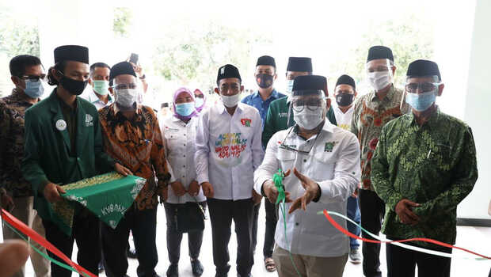
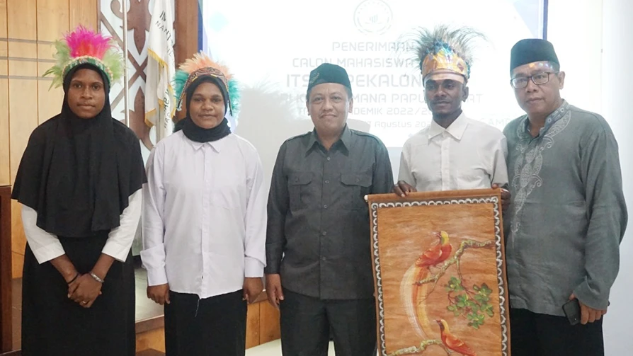
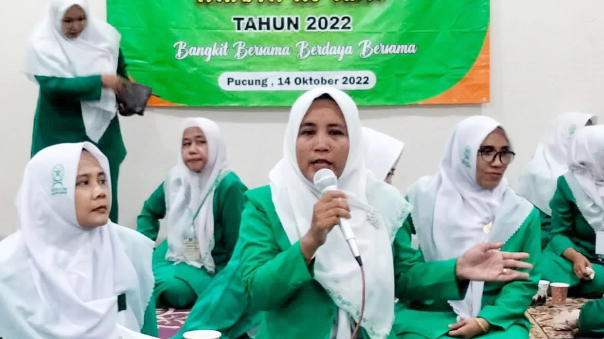
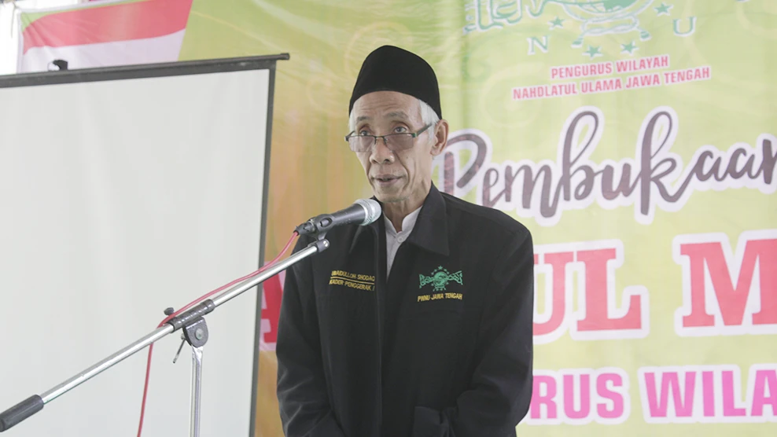
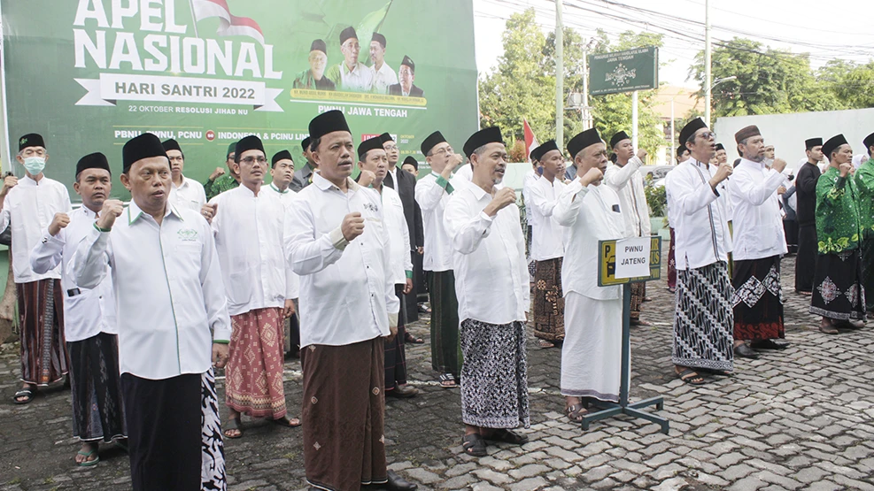

Wakil Ketua DPR Bidang Korkesra, Abdul Muhaimin Iskandar atau Gus Ami meresmikan Institute Teknologi dan Sains Nahdlatul Ulama (ITS NU) Pekalongan yang beralamat di Jalan Karangdowo No. 9, Kemoren, Kedungwuni, Rabu (18/11/2020). Wakil Ketua DPR Bidang Korkesra, Abdul Muhaimin Iskandar atau Gus Ami meresmikan Institute Teknologi dan Sains Nahdlatul Ulama (ITS NU) Pekalongan yang beralamat di Jalan Karangdowo No. 9, Kemoren, Kedungwuni, Rabu (18/11/2020). Peresmian gedung ITS NU Pekalongan dilakukan Gus Ami di sela-sela kegiatannya menyapa petani, nelayan, pelaku UMKM, dan guru ngaji Pekalongan di lokasi yang sama. Menurut Gus Ami, perkembangan teknologi yang sangat pesat saat ini memungkinkan pertumbuhan kualitas SDM di mana pun, tak terkecuali di dunia pendidikan. Dia berharap ITS NU menjadi kampus unggul dan maju, sehingga Pekalongan bisa menjadi pusat pengetahuan. “Di era teknologi saat ini keunggulan bisa tumbuh di mana pun. Kalau dulu ada Universitas Indonesia, UGM, tapi sekarang kuliah di kampus ITS NU juga bisa unggul dan maju,” kata Gus Ami. Oleh karena itu, Wakil Ketua DPR ini mendukung penuh pembangunan ITS NU Pekalongan yang berada satu komplek dengan kantor PCNU Pekalongan. “Saya kagum dengan ITS NU, tinggal para kaum muda ini pintar-pintar melihat potensi,” tuturnya. Selepas temu warga, Gus Ami lantas menuju halaman depan kampus ITS NU Pekalongan. Gus Ami lalu memotong pita sebagai tanda peresmian didampingi sejumlah elite PKB, Ketua PCNU Pekalongan KH Muslikh Khudhori, dan Rektor ITS NU, Hariyadi.
Resmikan ITS NU, Gus Ami Harapkan Pekalongan Jadi Pusat Pengetahuan
BERITA LAINNYA

ITSNU Pekalongan Terima Mahasiswa Asal Papua di Momen Hari kemerdekaan RI

Pasangan Suami Istri Ini Pimpin Organisasi Sayap NU Tirto Pekalongan

Rais PWNU Jateng Tegaskan, Bahtsul Masail Ruh Nahdlatul Ulama

PWNU Jateng Ikuti Apel Nasional Hari Santri 2022 Bersama PC dan MWCNU se-Jateng